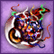

1
İyilik Temsilcisine Git
İyilik tarafındaki temsilci NPC'ye gidilir ve görev alınır.

Yarım Öfkeli Göz 50
İyilik Kardeşliği ve Kötülük Yapanlar Birliği hayran madalyalarına sahip olan oyuncular, temsilci NPC'ler üzerinden iki taraf arasında geçiş sistemi açabilir.
Bu geçiş sistemi için hem İyilik Kardeşliği hem de Kötülük Yapanlar Birliği madalyalarının Hayran seviyesinde olması gerekir.
İyilik tarafındaki temsilci NPC'ye gidilir ve görev alınır.

Yarım Öfkeli Göz 50Kötülük tarafındaki temsilci NPC'ye gidilir ve görev alınır.
İki temsilciye de 50'şer Yarım Öfkeli Göz verdikten sonra geçiş nesnesi alınır. Bu nesne karakterde kalır.
Çok Yönlülük Cazibesi ilk geçişte 30 Yarım Öfkeli Göz karşılığında kullanılır.
 1 Öfkeli Göz
1 Öfkeli Göz
Çok Yönlülük Cazibesi karakterde kalır, fakat 10 günde bir kullanılabilir.
Kötülükten İyiliğe geçince silinen cellat tekrar alınabilir ve bunun için ücret ödenmez.